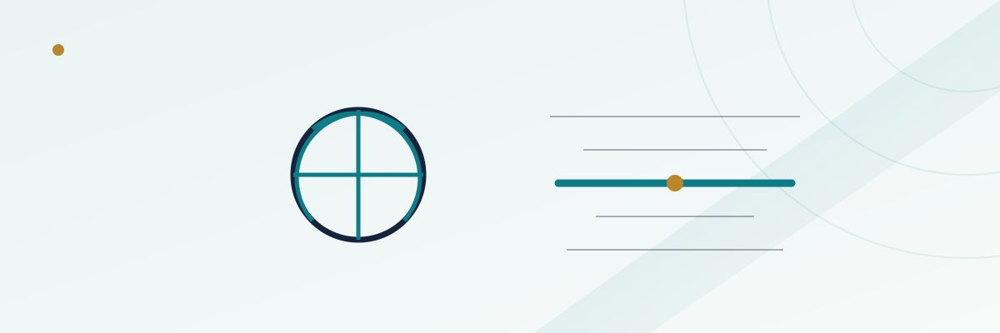

NBA Alternate Spreads and Totals: How Sportsbooks Price Them

Open any NBA game on a modern sportsbook app and the main spread is rarely the only spread on offer. Tap once and a whole ladder appears — the same matchup priced at half a dozen different numbers, each with its own odds. It can look like the book just made up a list of round numbers and slapped prices on them, but the ladder is built off real math, and understanding that math tells you a lot about how good a number actually is before you bet it.
In this guide
- What an alternate line actually is
- The main line is the anchor — everything else is derived from it
- Why moving a spread changes the odds, not just the number
- A worked example: pricing a ladder
- Alternate totals work the same way, with a wrinkle
- Why the vig on alternate lines often runs higher
- When an alternate line is actually worth taking
- Common mistakes bettors make with alternate lines
What an alternate line actually is
An alternate spread or total is the same game, priced at a different number than the book's main line, with the odds adjusted to compensate. If the main line on a game is a team favored by 6.5 points at standard -110 odds, the alternate menu might offer that same team at -4.5 (easier to cover, so the bettor pays more, maybe -145) or at -8.5 (harder to cover, so the bettor gets paid more, maybe +115). Nothing about the game changed. What changed is the probability that the bet wins, and the price moved to match.
This is a direct extension of the logic covered in our guide to how betting odds work: odds are simply probability translated into a payout. An alternate line menu is that same relationship stretched across a whole range of possible outcomes for one game, instead of collapsed into a single number.
The main line is the anchor — everything else is derived from it
Sportsbooks don't independently research and price every alternate number on the board. That would be enormously inefficient, and it would also open the door to pricing inconsistencies a sharp bettor could exploit by comparing one alternate line against another on the same game. Instead, the main spread and total are the book's actual opinion about the game, built from power ratings, injury news, pace projections, and whatever proprietary modeling the book uses. Every alternate number on the ladder is then generated mathematically from that single anchor point, using an assumed distribution of possible final-score margins around it.
In practice, this means the ladder is only as good as the main line underneath it. If the main number is soft — say, a book is slow to move it after news breaks — every alternate line built on top of it will be soft too, in the same direction, by roughly the same proportion.
Why moving a spread changes the odds, not just the number
NBA final margins cluster around a bell-shaped distribution centered near the main spread. Most games finish reasonably close to what the market expected; blowouts and nail-biters both happen, but they're the tails of the distribution, not the middle of it. That shape is what alternate-line pricing leans on.
Move a spread closer to the middle of that distribution — a favorite from -6.5 down to -2.5, for instance — and you're now including a wider band of realistic outcomes as a win, so the probability of covering goes up and the odds get worse (you have to risk more to win the same amount). Move a spread further into the tail — that same favorite up to -10.5 — and you're now requiring a less likely outcome, so the probability drops and the odds improve in the bettor's favor. Every rung on the ladder is really just a different slice of the same underlying probability curve, re-priced at that slice's specific likelihood.
A worked example: pricing a ladder
Say the main line is Team A -6.5 at -110 on both sides — the book's honest read of the game, with standard vig baked in. A simplified alternate ladder off that anchor might look something like this:
| Alternate spread | Approximate odds | What changed |
|---|---|---|
| Team A -2.5 | -165 | Easier to cover; costs more to bet |
| Team A -4.5 | -135 | Somewhat easier; costs somewhat more |
| Team A -6.5 (main line) | -110 | The book's actual number |
| Team A -8.5 | +105 | Harder to cover; pays a bit more |
| Team A -10.5 | +140 | Notably harder; pays more |
| Team A -13.5 | +220 | Tail outcome; pays much more |
The exact prices at any real sportsbook will differ from this illustration — every book's model, vig structure, and rounding conventions vary — but the pattern holds everywhere: price moves in a fairly smooth, continuous curve away from the main line in both directions, because it's tracking a continuous probability distribution, not a set of arbitrary round numbers.
Alternate totals work the same way, with a wrinkle
Alternate totals follow the identical logic — an Over/Under set at, say, 224.5 as the main number, with alternates fanning out above and below it, priced by how far each number sits from the model's expected combined score. The wrinkle with NBA totals specifically is that game pace is a more volatile input than most bettors assume. Two teams that both play at a fast pace can produce a total with a wider realistic range than two grind-it-out defensive teams, even if both games carry the same 224.5 main number — which means the odds on an alternate total a few points off the main line can differ meaningfully from one game to the next, even when the main numbers look identical.
This connects to the scheduling effects covered in our piece on how back-to-backs and home/road splits move NBA lines — a tired team's pace tends to drop, which narrows the realistic range of outcomes for that specific total and can shift how alternate total odds get priced around the main number on a fatigue-heavy schedule spot.
Why the vig on alternate lines often runs higher
A standard -110/-110 main-line spread carries a known, fairly modest house edge. Alternate lines frequently carry a wider built-in margin than the main number, for a straightforward reason: they're a lower-volume product built off a model rather than off two-sided market pressure from heavy public and sharp betting action. The main line gets bet by enough people, on both sides, that it tends toward genuinely efficient pricing over time. An alternate line three rungs off the main number gets far less betting volume, so the book leans more heavily on its own model and builds in extra cushion rather than relying on the market to correct any mispricing.
For background on exactly how that cushion is measured, see our explainer on how vig actually works and how to calculate your break-even win rate — the same math applies to an alternate line's price, it's just less visible because there's no simple "-110" shorthand to compare it against.
When an alternate line is actually worth taking
Alternate lines aren't a trick, and they're not inherently bad value — they're a legitimate tool for matching a bet to your actual read on a game. If you think a favorite is being underrated and is live to win by double digits, buying down to a bigger number at plus-money can be a perfectly reasonable way to express that opinion, rather than betting the main spread at even-ish odds. The mistake isn't using alternate lines; it's using them without checking whether the price you're getting for the extra cushion (or the extra risk) is actually fair relative to the main line's implied probability.
A rough gut-check: take the main line's vig-adjusted probability (roughly 50% at -110 on a two-way market) and ask whether the alternate number you're considering feels like it's genuinely that much more or less likely to hit than a coin flip, adjusted for how many points you moved. If the odds offered don't feel proportional to how far you moved off the anchor, that's worth a second look — and worth comparing against a second book, since alternate-line pricing conventions vary more from book to book than main-line pricing does.
Common mistakes bettors make with alternate lines
The most common mistake is treating an alternate line as "safer" just because it's easier to cover, without noticing that the odds have already been repriced to erase most of that safety margin. A second is chasing a favorite deep into the tail of the distribution for a big plus-money payout without recognizing how unlikely that outcome actually is — the odds are long specifically because the book thinks it's unlikely, not because the number is soft. A third is not comparing the same alternate number across multiple books; because alternate lines see less two-sided market pressure than main lines, the gap between the best and worst price on the same alternate number can be wider than it is on the main spread, which makes shopping around more valuable here, not less.
Frequently asked questions
Are alternate lines just the main line with random odds attached?
No. Each alternate number is derived mathematically from the main line using an assumed probability distribution of final margins, so the odds move in a smooth, predictable pattern the further a number sits from the anchor point.
Why do alternate lines sometimes carry worse odds than the main spread?
Alternate lines get far less betting volume than the main spread, so books lean more on their own model rather than two-sided market pressure, and typically build in a wider margin as a result.
Is it smarter to bet the main line or an alternate line?
Neither is inherently smarter — it depends on whether the specific price offered for moving off the main number matches your actual read on the game. The main line is usually the more efficiently priced number, but an alternate line can be a reasonable way to express a stronger or weaker opinion than the main spread reflects.
Do alternate totals work differently than alternate spreads?
The underlying math is the same, but total pricing is also sensitive to pace, which can vary more from game to game than scoring margin does — so two games with an identical main total can still see different alternate-total odds a few points off that number.
Should I shop multiple books for alternate lines specifically?
It's generally more worthwhile than shopping the main line, since lower volume on alternate numbers means less market pressure to keep pricing consistent across books, which can create wider gaps between the best and worst available price on the same number.